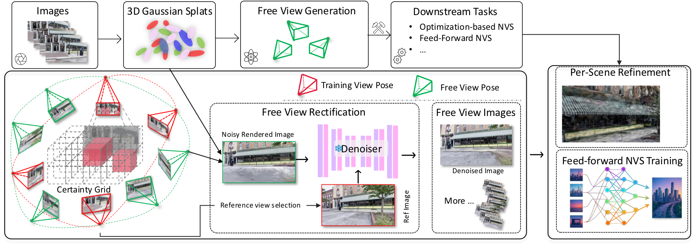
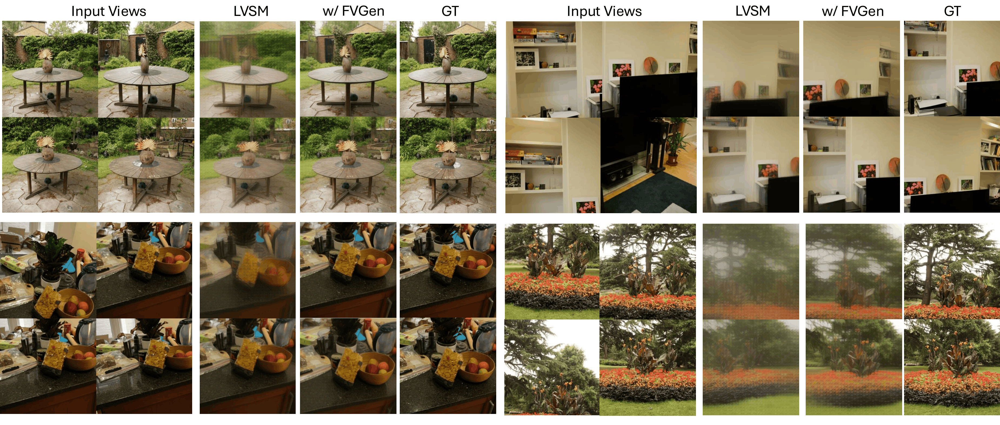

Certainty-Aware Free-View Synthesis
Certainty maps identify voxels reliable enough to explore. Small, opaque Gaussians indicate well-constrained geometry, so FreeScale accumulates them into a normalized voxel grid.
C(v) = sum alpha / (Vol + epsilon)

FreeScale converts limited real-world captures into extra posed observations by using an imperfect reconstruction as a geometry proxy, then sampling only the viewpoints that are likely to be informative and reliable.
Certainty maps identify voxels reliable enough to explore. Small, opaque Gaussians indicate well-constrained geometry, so FreeScale accumulates them into a normalized voxel grid.
Candidate camera poses are sampled around reliable anchors. Object-centric paths and motion patterns cover lemniscate, orbit, fly-through, and forward/backward exploration, with pose jitter for diversity.
The view graph connects cameras by shared high-certainty visibility. Certainty-weighted IoU makes selection geometry-aware instead of relying only on frame index or pose distance.
Small, opaque Gaussians indicate well-constrained geometry. FreeScale accumulates them into a normalized voxel grid, so virtual cameras can explore the scene while avoiding regions dominated by reconstruction artifacts.
This makes view selection geometry-aware instead of relying on frame index or pose distance.
On OOD scenes, generated free-view supervision helps LVSM preserve geometry and recover clearer novel views under challenging camera motion.

We compare FreeScale against 3D Gaussian Splatting (3DGS) and Difix3D+ on scenes from DL3DV-10K and Nerfbusters. Each clip below uses the same scene and playback controls for side-by-side free-view comparison.
Videos keep their native portrait or landscape framing automatically, and both comparison sliders stay synchronized to the same scene.
| Method | In-Domain (DL3DV) | MipNeRF360 | Tanks & Temples | ||||||
|---|---|---|---|---|---|---|---|---|---|
| PSNR↑ | SSIM↑ | LPIPS↓ | PSNR↑ | SSIM↑ | LPIPS↓ | PSNR↑ | SSIM↑ | LPIPS↓ | |
| Small camera motion | |||||||||
| LVSM | 22.20 | 0.680 | 0.216 | 15.84 | 0.285 | 0.583 | 13.07 | 0.336 | 0.674 |
| LVSM w/ FreeScale | 24.20 | 0.767 | 0.165 | 18.30 | 0.386 | 0.460 | 13.80 | 0.652 | 0.361 |
| Large camera motion | |||||||||
| 3DGS | 16.22 | 0.592 | 0.345 | 13.47 | 0.334 | 0.529 | 12.12 | 0.351 | 0.569 |
| LVSM | 18.75 | 0.522 | 0.352 | 13.88 | 0.293 | 0.622 | 13.89 | 0.352 | 0.650 |
| LVSM w/ FreeScale | 21.45 | 0.661 | 0.247 | 17.27 | 0.432 | 0.398 | 14.67 | 0.391 | 0.609 |
| Method | DL3DV | Nerfbuster | Tanks & Temples | |||||||
|---|---|---|---|---|---|---|---|---|---|---|
| PSNR↑ | SSIM↑ | LPIPS↓ | Time↓ | PSNR↑ | SSIM↑ | LPIPS↓ | PSNR↑ | SSIM↑ | LPIPS↓ | |
| Nerfbusters | 17.45 | 0.606 | 0.370 | - | 17.72 | 0.647 | 0.352 | - | - | - |
| DIFIX3D+ | 17.99 | 0.601 | 0.293 | 81.40 | 18.07 | 0.642 | 0.279 | 18.59 | 0.623 | 0.317 |
| 3DGS | 19.18 | 0.714 | 0.233 | 35.19 | 18.14 | 0.643 | 0.265 | 20.37 | 0.680 | 0.253 |
| 3DGS w/ DIFIX3D | 19.12 | 0.680 | 0.211 | 39.75 | 17.69 | 0.606 | 0.264 | 19.75 | 0.630 | 0.210 |
| 3DGS w/ FreeScale | 19.57 | 0.723 | 0.219 | 37.22 | 18.40 | 0.648 | 0.258 | 20.66 | 0.685 | 0.251 |
@inproceedings{jiang2026freescale,
title={FreeScale: Scaling 3D scenes via Certainty-Aware Free-View Generation},
author={Jiang, Chenhan and Chen, Yu and Zhang, Qingwen and Song, Jifei and Xu, Songcen and Yeung, Dit-Yan and Deng, Jiankang},
booktitle={Proceedings of the IEEE/CVF Conference on Computer Vision and Pattern Recognition (CVPR)},
year={2026}
}